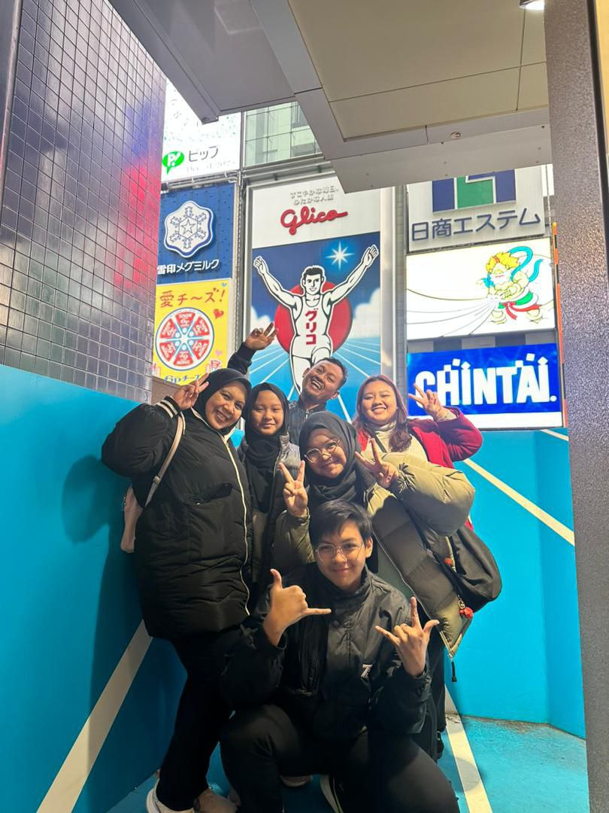

Dump Gallery₊˚⊹♡
Kenniji Temple, Kyoto
Yasaka Pagoda
Tokyo Tower at night

Sugadairakougen
Akihabara
Tsukiji Hongwan-ji Temple
Arayashima Bamboo Forest, Kyoto
Nara Park, Kyoto
Shimbashi

Dotonbori Glico sign, Osaka
Dad trying to ski
Kyoto Tower
Dotonbori, Osaka
Sumo restaurant in Osaka, Yokozuna Tsutentaku
Me with Infamous Glico Man